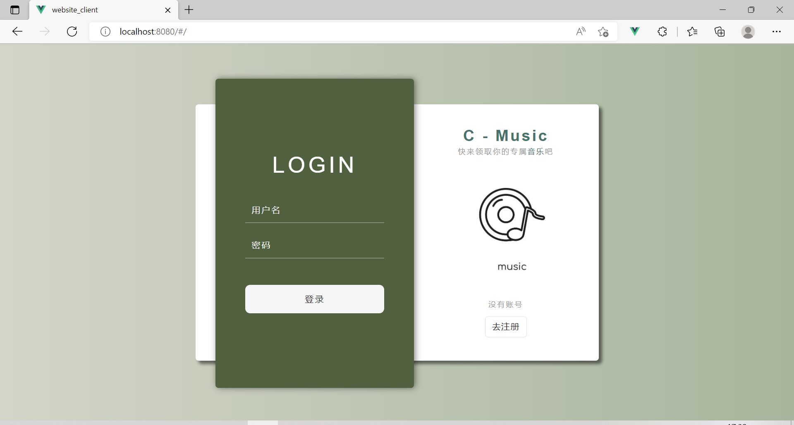

王紫禧
女 | 22岁 | web 前端 | 珠海
手机（同微信）：13421590677 | 邮箱：1935158902@qq.com
专业课程：数据结构与算法、计算机网络、操作系统、Java程序设计、数据库概论、编译原理、软件工程、计算机组成原理等。
教育经历
珠海科技学院 软件工程 本科 ~
专业技能
- 精通静态页面制作技巧，能够使用 HTML、CSS、JavaScript 将设计稿还原成页面;
- 精通 ES6 语法规范，包括 Promise / async / await / 析构赋值等；
- 精通 Vue 开发框架，包括 VueCli、VueRouter、Vuex等；
- 精通前后端分离技术，包括Axios、Ajax、Promise、跨域、前端路由、Cookie、Session 等；
- 掌握 React 开发框架；熟练解决简单的算法问题；
- 掌握 TypeScript 的使用，我的项目 布朗奇记账 就是基于 TypeScript 实现的；
- 掌握 Webpack 的配置和优化；
- 掌握 Java、MySQL 的基本语句，能基于数据库开发 JavaWeb 应用；
项目经历
-
布朗奇UI - 一套基于Vue3的桌面端组件库
源码链接 项目预览技术栈：Vue3、Vuex、VueRouter、Vuepress、npm、yarn。
1、本项目参考了 Ant-Design、Bootstrap、Element-UI等优秀 UI 框架，从用例分析开始，提供了按钮、开关、对话框、标签、走马灯等常用组件；
2、项目组件提供了多种自定义属性，比如按钮的形状、对话框的关闭形式等，用户可以按需引入；
3、本框架除了考虑自身再PC端和移动端的样式逻辑之外，还提供了 响应式的网格系统；
4、本项目使用 SCSS 编写默认样式，使用 npm 发布组件、Vuepress 编写官网。
扫描二维码预览
-
布朗奇记账 - 移动端网页记账 SPA 应用
源码链接 项目预览技术栈：Vue2、TypeScript、SCSS、Vuex、VueRouter。
该应用的设计理念是根据自身需求为基础，仿造市面上通用的记账应用如微信记账等，通过 Vue + TypeScript 技术设计出的极简记账应用。该应用的特点是快速记账，并通过图表的形式可以直接客观的了解自己的消费习惯。
通过对这个应用的设计使我对 TypeScript 语言有了更深的理解和更熟练的应用。
扫描二维码预览
-
CC-Music - 一个基于SpringBoot+vue的音乐网站
源码链接技术栈： Vue.js、JavaScript、SCSS、vuex、vue-router、springboot、MySQL、mybatisx。
这是一个基于 Vue 和 SpringBoot 的全栈项目。
功能包括：登录注册、播放歌曲、收藏歌曲、取消收藏歌曲、编辑个人信息、按歌手信息排序歌曲等，能根据用户的操作实时刷新网页、更新数据库数据。
该项目使我对服务器端的跨域和请求有更深一步的了解。
首页展示

其他技能和链接
- 2020-2021 学年三等奖学金
- 2021-2022 学年三等奖学金
- 通过 CET-4、CET-6 考试；
- 我的github ，过去三个月内有近 200 次提交记录。